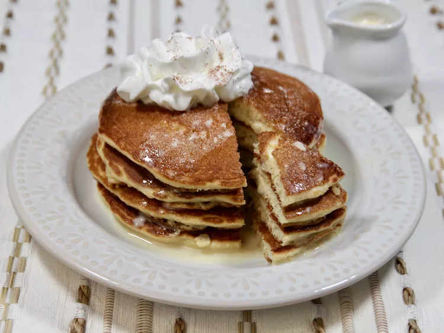

Tres Leches Pancake

Description
These tres leches pancakes are a mouthwatering and easy way to combine your love for tres leches cake with light and fluffy pancakes. They're indulgent, but perfect for a special occasion, upscale breakfast, or brunch.
Ingredients
- 2/3 cup sweetened condensed milk
- 1/2 cup evaporated milk
- 1/3 cup half and half
- 1 box French vanilla cake mix
- 1 1/4 cup almond milk
- 3 large eggs lightly beaten
- 4 tablespoons vegetable oil divided
- 1/2 cup whipped cream or as needed (optional)
- 1/4 teaspoon ground cinnamon or as needed (optional)
Directions
- Combine sweetened condensed milk, evaporated milk, and half and half in a small saucepan and set over medium heat. Bring to a boil, stirring constantly for 3 to 4 minutes. Remove from heat and let cool. This is a sauce, not a syrup, so consistency will be on the thinner side.
- Add cake mix, almond milk, eggs, and 3 tablespoons vegetable oil to a large bowl, and beat vigorously by hand for 2 minutes.
- Heat a large skillet or griddle over medium heat, and lightly coat with remaining vegetable oil. Add 1/4 cup of the batter for each pancake. Cook until edges begin to puff up, small bubbles appear, pop, and leave small holes, 2 to 3 minutes. Flip pancakes and cook until golden brown on the other side, about 2 minutes more.
- Serve pancakes warm with a drizzle of the tres leches sauce, a dollop of whipped cream, and sprinkle of cinnamon.